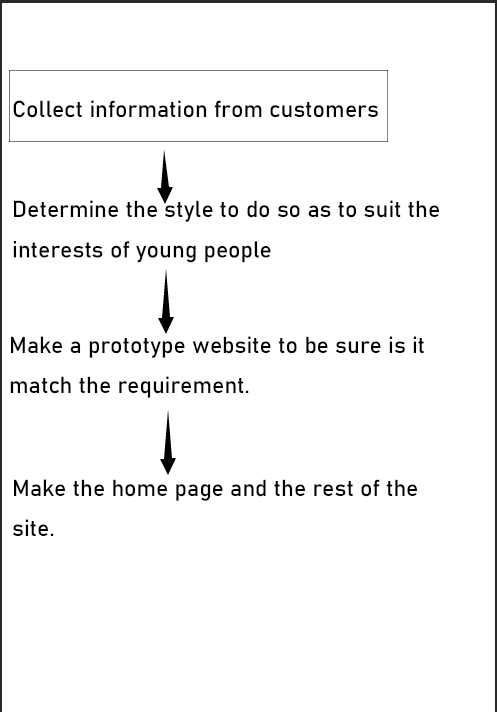

<HongZhe He & jc812102>
This website is for an Australia traditional bakery which can help them extend their customer group into youngs and present their goods to attract new customer
It should be a clearable website and match the client's requirement : 7-8 pages content, and should have a horizontal navigation at the top, and links should be appear in the footer.
The target audience is young group in 17-35 age. It matches what the client's requirement and I will try to be as concise as possible to fit young people's interests
Insert image here (GIF or PNG are normally the best format choice if doing a plain, straight-lined diagram). Use arrows to show link direction. You might consider using draw.io if you don't have a preferred flowchart drawing program.
